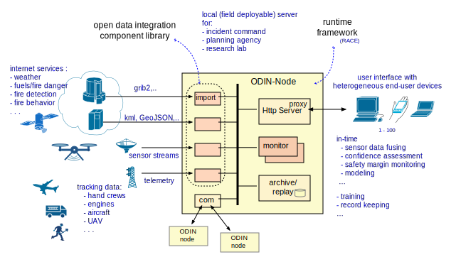

About ODIN-fire
The Open Data Integration Framework for Wildland Fire Management (ODIN-fire) project is aimed at providing an open source framework that allows stakeholders to create and run their own fire related applications. It is not another wildland fire website or service. ODIN-fire is a software project to integrate a wide variety of existing 3rd party web services such as weather, fire behavior models and sensor data with near-realtime tracking information such as ground crews, vehicles and aircraft.
Sytems built with ODIN-fire can run within the stakeholder organizations. They can be deployed in the field and can operate with limited or intermittent connectivity to the outside world. The primary use case is a web-server with local/persistent data storage that runs within and only serves the stakeholder network (e.g. an incident command post). Although there is no reason why ODIN-fire could not run in the cloud we do not target publicly available services supporting thousands of simultaneous users/requests.
ODIN-fire is built on top of the open source RACE_ actor framework. Technically it uses the more general RACE system to support the specific application domain of wildland fire management. Consequently, the main distribution path is through the RACE_repository and related binary artifacts. To that we have added a new RACE-ODIN repository to provide
- an example of how to create new ODIN components (using the Delphire Sentinel sensor network as an example)
- runnable examples of an ODIN-fire application
- ODIN-fire related documentation (such as this web page)
The primary reason for extracting this from the RACE_repository is readability - RACE is a large project with hundreds of files that would make it hard to locate respective example sources.
This website is not intended to replicate RACE documentation, for which we refer to the RACE website. Here we focus on the ODIN-fire specific aspects. Please note that - as opposed to RACE - ODIN-fire is a new project. Expect to see frequent changes to both the repository and the website.
To learn more, read about
- the Motivation for ODIN-fire
- the Vision behind it
- available Presentations_